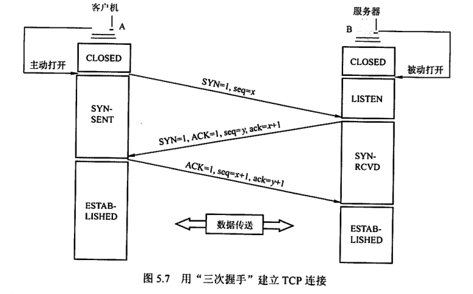

计算机网络-传输层
传输层
[TOC]
1. 传输层提供的服务
1.1. 传输层的功能 *
- 传输层提供应用进程之间逻辑通信（
端到端通信 ），网络层提供的是主机到主机的通信 - 复用和分用:
- 复用：发送方不同的应用进程可以用同一个传输层协议传送数据。
- 分用：接收方的传输层在剥去报文首部后能够把这些数据正确交付到应用进程。
- 传输层对收到的报文进行差错检测
- 提供两种不同的传输协议：面向连接的
TCP和无连接的UDP - 传输层向高层屏蔽了低层网络核心的细节，如网络拓扑，路由协议等。它使得进程看见的是两个传输层实体之间的一条端到端的逻辑通信信道，信道对上层的表现因传输层协议的不同而不同。
1.2. 传输层的寻址与端口 *
1.2.1. 端口的作用
- 端口是传输层服务访问点（
TSAP），用于标识主机中的某个应用进程 - 其能够让应用层的各种应用进程将数据通过端口向下交付给传输层
- 也能够让传输层将报文段中的数据通过端口向上交付给应用层
数据链路层的SAP是MAC地址，网络层的SAP是IP地址，传输层的SAP是端口号
1.2.2. 端口号 *
- 应用程序通过端口号进行标识，长度为 $16bit$
- 端口号只具有本地意义，即端口号只标识本计算机应用层的进程。
- 端口号分类：
- 服务器端:
- 熟知端口号：0-1023，用于TCP/IP最重要的一些应用程序
- 登记端口号：1024-49151，也叫注册端口号，用于没有熟知端口号的应用程序
- 客户端:
- 临时端口号：49152-65535，也叫动态端口号，用于客户进程运行时才会动态选择
- 服务器端:
1.2.3. 套接字 *
IP区分不同主机，端口号区分不同应用进程，套接字区分不同通信端点。
（协议、源地址、目的地址、源端口号、目的端口号）唯一标识一次传输层通信
1.3. 无连接服务与面向连接服务
面向连接服务：通信前必须建立连接，通信过程中，整个连接的情况被实时监控和管理，通信结束后必须释放连接。无连接服务：需要通信时，直接将信息发送到网络中，让信息在网上尽力而为地向目的地传送。TCP提供面向连接服务，增加许多开销，诸如确认、流量控制、计时器及连接管理。适用可靠性更高的场合，如FTP，HTTP等。UDP采用无连接服务，在IP之上只提供多路复用和错误检查。执行速度更快，实时性好，如TFTP（小文件传输协议），DNS，SNMP和RTP（实时传输协议）。IP数据报在网络层要经过路由器存储转发，UDP数据报在传输层的端到端的逻辑信道传输，其封装成IP数据报在网络层传输时，UDP数据报的信息对路由不可见。TCP报文段在传输层抽象逻辑信道传输，对路由器不可见；在传输层采用TCP不影响网络层提供无连接服务2. UDP协议 *
2.1. UDP数据报 *
2.1.1. 概述 *
UDP是无连接的传输层协议，它为应用层提供了一种不可靠的数据传输服务。- 在IP数据报上增加最基本的服务：复用和分用，差错检测
- 优点
- 无需建立连接，不会引入建立连接时延。
- 无连接状态，不用维护连接状态，不用跟踪控制参数，能支持更多的客户机。
- 分组首部开销小，只有8B。
- 应用层能更好控制发送的数据和发送时间。UDP没有拥塞控制，故网络中的拥塞不会影响主机发送效率
- 支持一对一，一对多，多对一和多对多的交互通信。
- UDP常用于一次性传输较少数据的网络应用，如
DNS，SNMP，以及多媒体应用。 - UDP不保证可靠交付，不意味着应用对数据要求是不可靠的。所有维护可靠性的工作可由用户在应用层完成。
- UDP是面向报文的，UDP对应用层交下来的报文，不进行任何拆分，也不会对报文进行合并，而是直接将应用层交下来的报文封装成UDP数据报，然后交给IP层。对于IP层交上来的UDP数据报，去除首部后，直接交给应用层。因此报文不可分割，是UDP数据报处理的最小单位。
2.1.2. UDP首部格式 *
- UDP首部8B，包括源端口号，目的端口号，长度，校验和。
源端口：2B，源端口号，需要对方回信时选用，否则全0目的端口号：2B，目的端口号，终点交付报文时必须使用长度：2B，UDP首部和UDP数据的总长度，单位字节，最小值为8B，即仅有首部校验和：2B，检验UDP首部和UDP数据的正确性，如果为0，表示不检验
- 传输层将UDP数据报根据不同端口上交给不同应用进程，即
UDP分用 - 如果接收方UDP发现端口号不正确，则丢弃报文，并且由ICMP发送差错报文给发送方
2.2. UDP校验
- 在UDP数据报前添加
12B伪首部，得到临时数据报。伪首部不向上或向下传递，只是为了计算校验和。 - 源IP地址 (4B)，目的IP地址 (4B)，0 (1B)，UDP协议号17 (1B)，UDP长度 (2B)，共12B。
- 发送方把全0放入校验和并添加伪首部，然后把UDP视为16位字串的拼接。若数据部分不是偶数个字节，则末尾添加1个全0字节（只添加不发送）。
- 按
二进制反码计算这些16位字串的和，将 和的反码 写入校验和字段并发送。 - 接收方把收到的UDP加上伪首部，按二进制反码求16位字串的和。若结果位全1，则表明无差错，否则丢弃报文。
3. TCP协议 *
3.1. TCP协议特点 *
TCP是面向连接的传输层协议，其连接是逻辑链接，主要解决传输可靠，有序，无丢失和不重复问题。- 每条TCP连接只能有两个端点，每一条TCP连接只能是端到端的（进程对进程）。
- TCP提供可靠交付的服务，保证传输的数据无差错，不丢失，不重复，且按序到达。
- TCP提供全双工通信，允许通信双方的应用进程在任何时候都能发送数据。所以TCP连接的两端都设有发送缓存和接收缓存，用来临时存放双方通信的数据。
- 发送缓存：
- 发送应用程序传送给发送方TCP准备发送的数据
- TCP已发送但尚未收到确认的数据
- 接收缓存：
- 按序到达的数据，但尚未被接收应用程序读取的数据
- 不按序到达的数据
- 发送缓存：
- TCP是面向字节流的，其将应用程序传下来的数据视为一连串无结构的字节流
- UDP报文长度由发送的应用进程决定，TCP报文长度根据接收方的窗口值和网络拥塞程度决定。
3.2. TCP报文段 *
- TCP报文段既可以运载数据，也可以建立连接，释放连接和应答
- TCP报文字段：
源端口和目的端口：各2B，传输层和应用层的服务接口，复用和分用功能依靠端口号实现序号：4B，32位的序号，用来标识本报文段所发送的数据的第一个字节的序号确认号：4B，期望收到对方下一个报文段的第一个数据。若确认号为N，则表明到N-1为止的数据已经正确收到数据偏移：4位，指TCP报文段数据起始处距离TCP报文起始处多远，单位是4B，即32位，最大值为60B，即15个32位，即60B保留位：6位，保留位，目前没有使用紧急位URG：1位，紧急指针字段是否有效，尽快传输紧急数据确认位ACK：1位，确认号字段是否有效，TCP规定建立连接后，所有报文段都必须把ACK置1推送位PSH：1位，接收方TCP是否立即将收到的数据交给应用程序，而不是等到缓存填满再向上交付。复位位RST：1位，表示TCP连接出现严重差错，必须释放连接，然后重新建立连接同步位SYN：1位，表示连接请求（ACK=0）或连接接受（ACK=1）报文段终止位FIN：1位，表示释放连接。窗口：2B，16位，允许对方发送的数据量。校验和：2B，校验和字段检验范围包括首部和数据两部分。与UDP一样，要在TCP报文段前加上12B的伪首部紧急指针：2B，只有在URG=1时才有意义，指出本报文段中紧急数据共多少字节。选项：长度可变。TCP最初只规定了一种选项，即MSS最大报文段长度，表示数据字段的最大长度。填充：为了使整个首部长度是4B的整数倍
3.3. TCP连接管理 *
- TCP连接的建立和释放需要经过三次握手和四次挥手，TCP连接是全双工的，即双方都可以同时发送数据。
- TCP解决的三个问题：使双方确知对方存在；允许双方协商参数；能够对运输实体资源进行分配。
- TCP连接的端口是套接字，每条TCP连接都唯一地被通信的两个端点（套接字）确定。
- TCP连接的建立采用
C/S模式，主动发起建立连接的应用进程称为 客户端Client，被动等待建立连接的应用进程称为 服务器Server。
3.3.1. TCP连接的建立 *

三次握手：建立连接时，客户端和服务器端需要发送SYN，SYN+ACK，ACK三个报文段。建立连接前：服务器处于LISTEN收听状态。第一次握手：客户端发送连接请求报文段，SYN=1，Seq=x（初始序号），ACK=0，客户端进入SYN_SENT同步已发送 状态，等待服务器确认。第二次握手：服务器收到连接请求报文段后，如果同意建立连接，则会发送一个连接确认报文段，SYN=1，ACK=1，Seq=y，ack(确认号)=x+1，服务器进入SYN_RCVD同步收到 状态。第三次握手：客户端收到连接确认报文段后，还要向服务器发送一个确认报文段，ACK=1，Seq=x+1，ack=y+1，客户端进入ESTABLISHED已建立 状态，完成TCP连接的建立。第二次握手不能携带数据，也要消耗一个序号；第三次握手如果不携带数据则不消耗序号。
服务器端的资源是第二次握手时分配的，客户端资源是第三次握手时分配的。服务器容易收到SYN洪泛攻击。
3.3.2. TCP连接的释放 *
- 参与TCP连接的两个进程中任何一个都能终止连接。
以下假设客户端先挥手。
四次挥手：释放连接时，客户端和服务器端需要发送FIN，ACK，FIN，ACK四个报文段。第一次挥手：客户端向TCP发送连接释放报文段，FIN=1，Seq=u，客户端进入FIN_WAIT_1终止等待1 状态，停止发送数据，但对方可以继续发送数据。第二次挥手：服务器收到连接释放报文段后，发送一个确认报文段，ACK=1，Seq=v，ack=u+1，服务器进入CLOSE_WAIT关闭等待 状态，此时TCP连接处于半关闭状态。期间：客户端到服务器端的连接已经释放，但服务器到客户端的连接还没有释放，服务器发送的数据客户端仍需接收。第三次挥手：服务器向客户端发送连接释放报文段，ACK=1，FIN=1，Seq=w，ack=u+1，服务器进入LAST_ACK最后确认 状态。第四次挥手：客户端收到连接释放报文段后，发送一个确认报文段，ACK=1，Seq=u+1，ack=w+1，客户端进入TIME_WAIT时间等待 状态，等待可能出现的对方的最后一个ACK。在2MSL最长报文段寿命 后，客户端进入CLOSED关闭 状态，完成TCP连接的释放。
3.4. TCP可靠传输
- TCP使用了校验，序号，确认和重传等机制来达到目的。其中TCP的校验机制与UDP校验一样。
3.4.1. 序号
- 序号建立在字节流的基础上，TCP首部的序号保证数据能有序交给应用层。
3.4.2. 确认
- TCP的确认机制是接收方向发送方发送确认信息，确认信息中包含了期望收到的下一个字节的序号。
- 发送方缓存区会存储已发送未收到确认的报文段，以便需要时重传。
- TCP默认使用
累积确认。即只确认数据流中至第一个丢失字节为止的字节。
3.4.3. 重传
- 两种事件会导致TCP重传：
超时和冗余ACK。 超时- TCP发送一个报文段后，对其设置计时器，如果到重传时间后还未收到确认，则重传这一报文段。
- 由于传输层往返时延方差很大，TCP采用自适应算法。
- 往返时间
RTT：一个报文发出和收到确认的时间差。 - TCP随着测量 $RTT$ 样本值的变化，根据加权平均算法，算出平均往返时延 $RTT_{S}$，又称平滑往返时延。
- 超时重传时间 $RTO$ 应略大于 $RTT_{S}$。
- $RTT_{D}$ 是 $RTT$ 的偏差加权平均值，其与 $RTT_{S}$ 和新的 $RTT$ 样本之差有关。第一次测量时， $RTT_{D}$ 为测量到的 $RTT$ 样本值的一半。在以后的测量中，使用下面的公式计算 $RTT_{D}$。
- 一般 $\beta \lt 1$，推荐值是 $0.25$
冗余确认
- 每当比期望序号大的失序报文到达时，就发送一个
冗余ACK，指明下一个期待字节的序号。 - 当发送方收到同一个报文段的
三次冗余ACK后，就可认为跟在这个被确认报文段后的报文段已经丢失，于是快速重传这个报文段。
3.5. TCP流量控制 *
- 流量控制的目的是消除发送方和接收方之间的数据传输速率不匹配的问题。
- TCP采用基于
滑动窗口协议的流量控制机制。 - 接收方根据自己接收缓存的大小，动态调整发送方的发送窗口大小，这称为接收窗口
rwnd，单位字节。 - 发送方根据当前网络拥塞程度的估计而确定的窗口值，称为拥塞窗口
cwnd，其大小与网络带宽和时延密切相关。
3.6. TCP拥塞控制 *
- 描述：
- 拥塞控制防止过多数据注入网络，保证网络中路由器或链路不致过载。
- 拥塞控制让网络能够承受现有网络负荷，是全局过程，涉及所有主机和路由器。
- 流量控制往往是指点对点的通信量的控制，是端到端的问题，它要做的是抑制发送端发送数据的速率，使得接收端能够及时地处理接收到的数据。
- 维护
两个窗口:- 接收窗口
rwnd：反应接收方容量，接收方根据TCP首部窗口字段通知发送方。 - 拥塞窗口
cwnd：反应网络当前容量，发送方根据网络拥塞程度动态调整。 - 发送窗口上限值：上述两个之间最小的一个。
- 接收窗口
四种算法：慢开始，拥塞避免，快重传，快恢复。3.6.1. 慢开始 *
- 令cwnd=1，即一个最大报文段长度MSS，每收到一个报文段的确认后，将cwnd加一。宏观上，每经过一个往返时间RTT，cwnd就
加倍，直至增加到一个规定的慢开始门限ssthresh（阈值） ，然后采用拥塞避免算法。 - 慢开始的
慢指 开始慢，即开始设置cwnd=1。
3.6.2. 拥塞避免算法 *
- 每经过一个往返时延RTT就把发送方的拥塞窗口 cwnd
加一。使拥塞窗口cwnd按线性规律缓慢增长。 - 算法归纳如下：
- $cwnd \lt ssthresh$，使用
慢开始算法 - $cwnd \gt ssthresh$，停止使用慢开始算法而改用
拥塞避免算法 - $cwnd=ssthresh$，既可以用慢开始算法，又可以用
拥塞避免算法(通常做法)
- $cwnd \lt ssthresh$，使用
3.6.3. 网络拥塞处理 *
- 在上述两个阶段，如果发送方判断网络出现拥塞，即出现
超时情况，则把慢开始门限 $ssthresh$ 设置为当前 $cwnd$ 的一半（不能小于2）。然后将 $cwnd$ 置为1，并重新开始慢开始算法。 - 目的是迅速减少主机发送到网络中的分组数，使得拥塞路由器有足够时间把队列中积压的分组处理完。
- 拥塞避免无法完全避免拥塞，只能使网络不同意出现拥塞
3.6.4. 快重传 *
- 发送方连续收到
三个冗余ACK后，不必等待超时重传定时器到期，就立即重传丢失的报文段。
3.6.5. 快恢复 *
- 发送方连续收到
三个冗余ACK时，将 $ssthresh$ 设置为当前 $cwnd$ 的一半，并将 $cwnd$ 置为 $ssthresh$当前数值，然后进入拥塞避免算法。 - 发送方预防网络发生拥塞，而由于可以收到连续的报文，故网络没有发生严重拥塞，所以跳过了慢开始算法，直接进入
拥塞避免算法，称为快恢复。
All articles in this blog are licensed under CC BY-NC-SA 4.0 unless stating additionally.